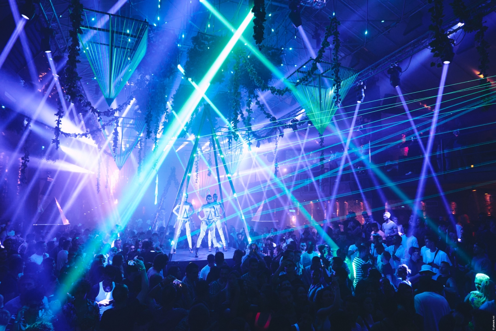

28.12.2022
Pyramid Amnesia пристига в София в целия си блясък на 4ти февруари
На 4ти февруари 2023 година 4та зала на столичния Интер Експо Център ще се превърне в един от най-популярните клубове в света с двете си зали – Terraza и Club. Заедно с резидентите Mar–T, Luca Donzelli и останалите Ди Джеи за вечерта, ще видим и оригиналните декори за двете сцени както и емблематичната пирамида – символ на Амнезия от началото на Седемдесетте години на миналия век. Именно тази пирамида дава името и на партито, с което клубът гостува на Метрополис.
Амнезия печели световна популярност още в средата на Осемдесетте години, когато резидент на дискотеката става DJ Alfredo – Alfredo Fiorito. Неподражаемият му начин на смесване на поп, рок, диско и хаус музика дава началото на това, което наричаме Балеарски стил, стил, който превръща остров Ибиса в най-големия парти център в света, а Амнезия в най – известния клуб на планетата посещаван от знаменитости като Боно, Мик Джагър, Наоми Кембъл, Пъф Деди, Меси и Леонардо ди Каприо. Учудващо, но е факт, че при тази комерсиална популярност Амнезия успява да „подслони“ някои от най- авангардните парти вечери на Ибиса от Cocoon на Свен Ват до WooMoon, което се организира в подопечния клуб Cova Santa.

Но когато говорим за чистата, неподправена Амнезия емоция винаги става въпрос за Pyramid. Pyramid иска да изгради общност, която избягва музикалния фаст фууд и гради ценности, изградени върху първичната база на клубната култура. Парти, което не забравя, че преди визията е музиката и което цени миналото, живее в настоящето и танцува към бъдещето. Повече инфо и пълен списък на Ди Джеите – скоро.